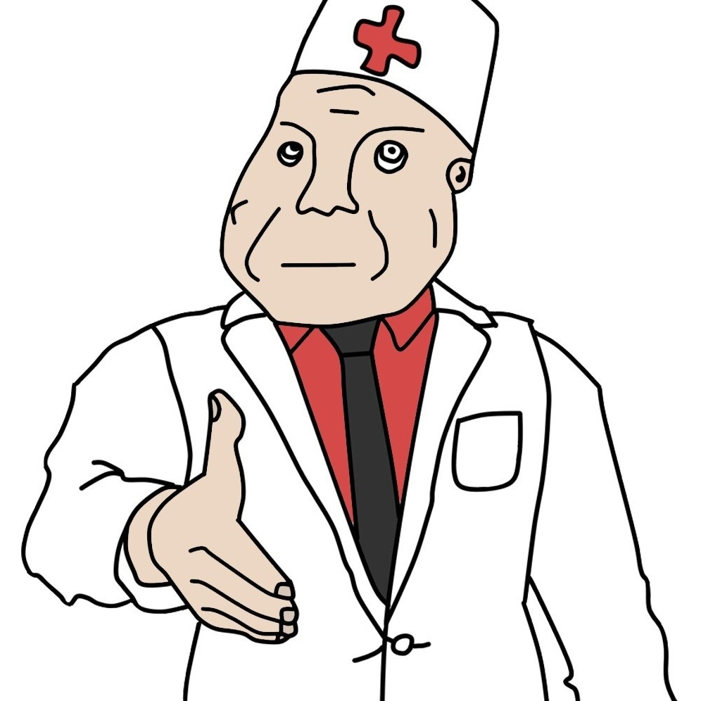
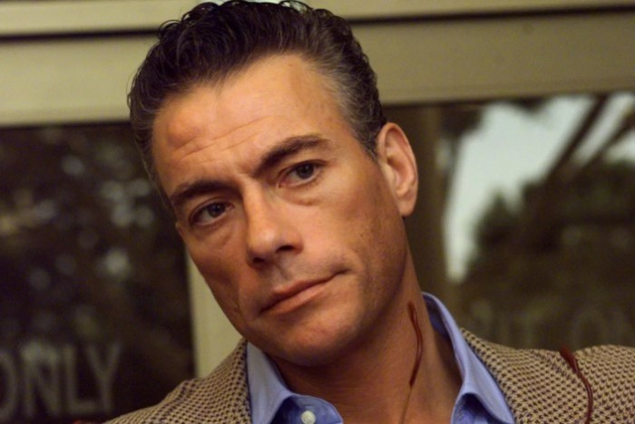
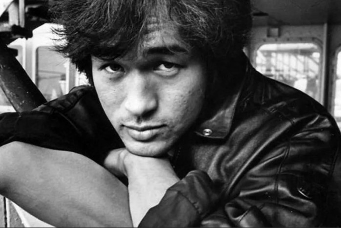

Топ 10 знаменитостей побывавших в дурке!!!

Психиатрическая больница(Дурка) — стационарное учреждение здравоохранения, осуществляющее лечение и реабилитацию лиц с психическими расстройствами, а также выполняющее экспертные функции, занимаясь судебно-психиатрической, военной и трудовой экспертизой.
10 место: Леди Гага
Эксцентричная певица первой открыто заявила о своих проблемах такого рода, впрочем, никто в этом ничего необычного не увидел, ведь все привыкли к тому, что она всегда ведет себя вызывающе-оригинально. Однако смелость была в том, что Леди Гага связала свои тревожные расстройства и депрессию с резко возросшей популярностью. Тогда она рассказала поклонникам, что всегда считала депрессию просто плохим настроением и вялостью – то есть попросту не относилась к ней всерьез. На самом деле все оказалось гораздо сложнее, а потому важно открыто признавать свои проблемы. По словам певицы именно ее откровенность помогла побороть проблемы, пока они не приобрели затяжную форму и обратить внимание близких на себя, получить их помощь и поддержку.
9 место: Джим Керри
Грустный комик долгое время страдал от депрессии и пытался заглушить ее таблетками. Ситуация доходила до абсурда – весь съемочный день он веселился и дурачился перед камерами, а ночью, дома, глотал таблетки, чтобы дожить до утра. Кажется, примерно такую же ситуацию он сыграл в фильме «Маска».
После обращения к психотерапевту его проблемы стали менее выраженными, а сам актер признал, что проблему нужно искоренять, а не пытаться маскировать антидепрессантами.
8 место: Анджелина Джолли
Первая красавица Голливуда обладает явно очень тонкой душевной организацией. Она неоднократно говорила об этом в интервью, первые проблемы психологического характера начались у девочки после развода родителей. В молодости она увлекалась и наркотиками и резала себя.
После смерти матери проблемы снова дали о себе знать, но Джолли, зная о своей склонности к депрессии и другим сопутствующим заболеваниям, регулярно обращается за помощью к специалистам и не пренебрегает их рекомендациями.
7 место: Принцесса Диана
Всеми любимая принцесса Диана, пожалуй, всегда подкупала именно искренностью, также она открыто говорила и о своих проблемах с пищевым поведением – у нее была булимия, которая обострилась на фоне переживаний во время подготовки к свадьбе. Немудрено, ведь к ней было приковано внимание всего мира.
Она успешно скрывала свою проблему, но после проблем в личной жизни к ней добавилась еще и депрессия, но все равно Диана находила в себе ресурсы быть открытой и помогать другим людям, а не зацикливаться на собственных проблемах, как это часто бывает в большинстве случаев.
6 место: Виктор Сухоруков
Актер обладает весьма яркой внешностью, но типаж таков, что ему постоянно достаются роли мерзавцев. Причем весьма хитрых, беспринципных и умных. Сухоруков утверждает, что желание выпить начало преследовать его во время съемок фильма «Про уродов и людей». Персонаж, которого он воплощал, давался ему очень тяжело, поскольку даже для привыкшего актера он был редкостным мерзавцем. Сначала он пил дома, затем и на работе, переливая алкоголь в бутылку из под кефира.
В себя он пришел уже в клинике, лечение было долгим и сложным, врачи ему поставили «металкогольный психоз», а в простонародье «белая горячка». С тех пор Сухоруков не пьет уже почти второй десяток подряд. Этот эпизод в его жизни стал переломным, заставив его отказаться от пагубной привычки.
5 место: Жан-Клод Ван Дамм

Герой боевиков тоже признался в том, что у него «биполярка», однако его агрессия и ярость выражаются в спорте, причем очень давно. Он утверждает, что давно чувствовал, что ярость сменяется чувством подавленности, но считал это скорее нормой и полагал, что нечто подобное испытывают все без исключения.
После того как он прошел обследование и нашел корень проблемы, жить ему стало гораздо проще и дело не только в том, что он получил помощь специалиста, но и в том, что понял, что это не есть норма.
4 место: Дима Билан
Певец попал в клинику, в которой лечится Лолита Милявская на стационарное лечение, после смерти своего первого продюсера Юрия Айзеншписа. Тогда Билан разорвал контракт с продюсерским центром Айзеншписа, чем навлек на себя гнев коллег по цеху, которые обвиняли его в предательстве, да еще и в сложный период.
Билан тяжело переживал это время и обвинения в свой адрес, поэтому решил обратиться к специалистам самостоятельно. После того как он заключил контракт с Яной Рудковской нападки в его адрес прекратились, да и Дима стал иначе смотреть на многие вещи.
3 место: Оксимирон

Репер, чья популярность сейчас на спаде, никогда не скрывал, что имеет проблемы с психологическим здоровьем. У него даже есть песня «Биполярочка» и именно от биполярного расстройства он и лечился в свое время.
Он подчеркивает, что проблемы депрессивного характера начались у него еще в подростковом возрасте, у него даже был подтвержденный диагноз «депрессия», но он так и не лечился, поэтому его состояние ухудшилось до биполярного расстройства.
2 место: Виктор Цой

Лидер группы «Кино» провел в психиатрической клинике в Питере полтора месяца, ему был поставлен диагноз «маниакально-депрессивный психоз». Там же он работал над песней «Транквилизатор».
Но близкие люди Цоя уверяли, что нахождения певца в клинике было связано не с его болезнью, а желанием не угодить в армию. Во-первых, он не мог оставить группу на два года и отдавать долг Родине. Во-вторых, на тот момент в разгаре была Афганская война и ему с его то восточной внешностью был бы уготован билет именно в том направлении.
И наконец-то...1 место!: Трачевский Эдуард
Герой франшизы "Весёлые приключения Эдика" от разработчика Данила Припата проходил курс лечения в женской колонии г. Мелитополь, откуда был направлен в дурку №10 г. Мелитополь. В самой дурке Эдуарда боялись, со слов глав врача, цитирую: "Трачевский это ебучий феномен, я такого уебана не видел ещё никогда, однажды он присунул мне ночью, после чего я сам прошёл курс лечения". В дурке Трачевского прозвали "Панин", как бы намекая на пристрастия к сексу с собаками. После тяжёлого и долгого курса лечения Трачевский поступил в шарагу в г. Мелитополь, но врачи не подозревают, что они выписали ещё не здорового пациента, и по этому, совсем скоро в городе стали пропадать собаки, и всё чаще появляться человекоподобные люди...